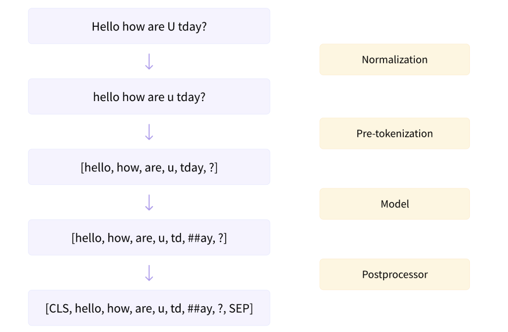

Tokenization
Contents
Tokenization#
Overview#
NLP systems have three main components that help machines understand natural language:
Tokenization: Splitting a string into a list of tokens.
Embedding: Mapping tokens to vectors.
Model: A neural network that takes token vectors as input and outputs predictions.
Tokenization is the first step in the NLP pipeline.
Tokenization is the process of splitting a string into a list of tokens.
For example, the sentence “I like to eat apples” can be tokenized into the list of tokens
["I", "like", "to", "eat", "apples"].The tokens can be words, characters, or subwords.
In deep learning, tokenization is the process of converting a sequence of characters into a sequence of tokens, then converting each token into a numerical vector to be used as input to a neural network.
What is Tokenization?#
Tokenization is the process of representing a text in smaller units called tokens.
In a very simple case, we can simply map every word in the text to a numerical index.
For example, the sentence “I like to eat apples” can be tokenized into the list of tokens:
["I", "like", "to", "eat", "apples"].Then, each token can be mapped to a unique index, such as:
{"I": 0, "like": 1, "to": 2, "eat": 3, "apples": 4}.There are more linguistic features to consider when tokenizing a text, such as punctuation, capitalization, and so on.
Why do we need tokenization?#
“How can we make a machine read a sentence?”
Machines don’t know any language, nor do they understand sounds or phonetics.
They need to be taught from scratch.
The first step is to break down the sentence into smaller units that the machine can process.
Tokenization determines how the input is represented to the model.
This decision has a huge impact on the performance of the model.
Tokenization Methods#
Word-level tokenization: Split a sentence into words.
Character-level tokenization: Split a sentence into characters.
Subword-level tokenization: Split a sentence into subwords.
Word (White Space) Tokenization#
The simplest tokenization method is to split a sentence into words.
This is also called white space tokenization.
The sentence “I like to eat apples” can be tokenized into the list of tokens:
["I", "like", "to", "eat", "apples"].This method is very fast and easy to implement.
However, it has some limitations.
Problems with Word tokenizer#
Out-of-vocabulary (OOV) words:
The risk of missing words that are not in the vocabulary.
The model will not recognize the variants of words that were not in the training set.
For example, even though the words
pineandappleexist in the training set, the model will not recognize the wordpineapple.
Punctuation and abbreviations:
The tokenizer will not recognize punctuation and abbreviations.
For example, the word
don'twill be tokenized as["do", "n't"].
Slang and informal language:
The tokenizer will not recognize slang and informal language.
For example, the word
gonnawill be tokenized as["gon", "na"].tl;drwill be tokenized as["tl", ";", "dr"].
What if language does not use spaces for separating words?
Chinese, Japanese, and Korean do not use spaces to separate words.
The tokenizer will not work for these languages.
Character Tokenization#
To solve the problems of word tokenization, we can split a sentence into characters.
The sentence “I like to eat apples” can be tokenized into the list of tokens:
["I", " ", "l", "i", "k", "e", " ", "t", "o", " ", "e", "a", "t", " ", "a", "p", "p", "l", "e", "s"].However, this method has its own problems.
Problems with Character tokenizer#
The number of tokens is very large.
This requires more computation and memory.
Limit the application of the model.
Only certain types of models can be used.
It is inefficient for the certain types of applications, such as NER.
It would be difficult to understand the relationship between the tokens.
For example, the tokens
["a", "p", "p", "l", "e"]do not represent the wordapple.The tokens
["a", "p", "p", "l", "e"]do not have any relationship with the tokens["a", "p", "p", "l", "e", "s"].
Incorrect spelling could be generated.
Subword Tokenization#
With character-level tokenization, we risk losing the semantic features of the words.
With word-level tokenization, we have out-of-vocabulary (OOV) words or very large vocabulary sizes.
To solve the problems of word tokenization and character tokenization, an algorithm should be able to:
Retain the semantic features of the words.
Tokenize any words without the need for a huge vocabulary.
Subword tokenization is a method that can solve these problems.
For example, the sentence “I like to eat pineapples” can be tokenized into the list of tokens:
["I", "like", "to", "eat", "pine", "##app", "##les"].The model only learns a few subwords that can be used to represent any word.
This solves the problem of OOV words.
How to decide which subwords to use?#
There are several algorithms that can be used to decide which subwords to use.
Byte Pair Encoding (BPE)
Byte-level BPE
WordPiece
Unigram
SentencePiece
Subword Sampling
BPE-dropout
Normalization and pre-tokenization#
Before tokenization, we need to normalize the text.
Normalization is the process of converting a text to a standard form.
For example, we can convert all characters to lowercase.

The Transformers tokenizer has an attribute called backend_tokenizer that provides access to the underlying tokenizer from the Tokenizers library:
from transformers import AutoTokenizer
tokenizer = AutoTokenizer.from_pretrained("bert-base-uncased")
print(type(tokenizer.backend_tokenizer))
<class 'tokenizers.Tokenizer'>
print(tokenizer.backend_tokenizer.normalizer.normalize_str("Héllò hôw are ü?"))
hello how are u?
Pre-tokenization#
A tokenizer cannot be trained on raw text alone.
First, we need to split the text into smaller units, like words or characters.
Pre-tokenization is the process of splitting the text into smaller units before tokenization.
tokenizer = AutoTokenizer.from_pretrained("bert-base-uncased")
tokenizer.backend_tokenizer.pre_tokenizer.pre_tokenize_str("Hello, how are you?")
[('Hello', (0, 5)),
(',', (5, 6)),
('how', (7, 10)),
('are', (11, 14)),
('you', (16, 19)),
('?', (19, 20))]
tokenizer = AutoTokenizer.from_pretrained("gpt2")
tokenizer.backend_tokenizer.pre_tokenizer.pre_tokenize_str("Hello, how are you?")
[('Hello', (0, 5)),
(',', (5, 6)),
('Ġhow', (6, 10)),
('Ġare', (10, 14)),
('Ġ', (14, 15)),
('Ġyou', (15, 19)),
('?', (19, 20))]
tokenizer = AutoTokenizer.from_pretrained("t5-small")
tokenizer.backend_tokenizer.pre_tokenizer.pre_tokenize_str("Hello, how are you?")
/opt/conda/lib/python3.8/site-packages/transformers/models/t5/tokenization_t5_fast.py:156: FutureWarning: This tokenizer was incorrectly instantiated with a model max length of 512 which will be corrected in Transformers v5.
For now, this behavior is kept to avoid breaking backwards compatibility when padding/encoding with `truncation is True`.
- Be aware that you SHOULD NOT rely on t5-small automatically truncating your input to 512 when padding/encoding.
- If you want to encode/pad to sequences longer than 512 you can either instantiate this tokenizer with `model_max_length` or pass `max_length` when encoding/padding.
- To avoid this warning, please instantiate this tokenizer with `model_max_length` set to your preferred value.
warnings.warn(
[('▁Hello,', (0, 6)),
('▁how', (7, 10)),
('▁are', (11, 14)),
('▁you?', (16, 20))]
Byte Pair Encoding (BPE)#
Sennrich et al. (2016) proposed a method called Byte Pair Encoding (BPE) to learn subword units. [Sennrich et al., 2016]
Byte Pair Encoding algorithm is originally used for compressing text.
It splits words into sequences of characters and iteratively combines the most frequent character pairs.
How to learn subwords from data?#
Count the frequency of each word shown in the corpus.
For each word, append a special stop token
</w>at the end of the word.Then, split the word into characters.
Initially, the tokens of the word are all of its characters plus the additional
</w>token.For example, the tokens for word
loware [l,o,w,</w>] in order.So after counting all the words in the dataset, we will get a vocabulary for the tokenized word with its corresponding counts
{'l o w </w>': 5, 'l o w e r </w>': 2, 'n e w e s t </w>': 6, 'w i d e s t </w>': 3}
In each iteration, count the frequency of each consecutive byte pair, find out the most frequent one, and merge the two byte pair tokens to one token.
For the above example, in the first iteration of the merge, because byte pair
eandsoccurred 6 + 3 = 9 times which is the most frequent, merge these into a new tokenes.Note that token
sis also gone in this particular example.
{'l o w </w>': 5, 'l o w e r </w>': 2, 'n e w es t </w>': 6, 'w i d es t </w>': 3}
In the second iteration of merge, token
esandtoccurred 6 + 3 = 9 times, which is the most frequent.Merge these to into a new token
est.Note that token
esandtare also gone.
{'l o w </w>': 5, 'l o w e r </w>': 2, 'n e w est </w>': 6, 'w i d est </w>': 3}
In the third iteration of the merge, token
estand</w>pair is the most frequent, etc.Do this until we have the desired number of tokens or reach the maximum number of iterations.
Stop token </w> is also important.
Without
</w>, say if there is a tokenst, this token could be in the wordst ar, or the woldwide st.Those two words are very different in meaning, but the token
stis the same.With
</w>, if there is a tokenst</w>, the model immediately know that it is the token for the woldwide st</w>but notst ar</w>.
To summarize, the algorithm is as follows:
Extract the words from the given dataset along with their count.
Define the vocabulary size.
Split the words into a character sequence.
Add all the unique characters in our character sequence to the vocabulary.
Select and merge the symbol pair that has a high frequency.
Repeat step 5 until the vocabulary size is reached.
BPE in Practice#
from ekorpkit import eKonf
cfg = eKonf.compose("path")
cfg.cache.uri = "https://github.com/entelecheia/ekorpkit-book/raw/main/assets/data/us_equities_news_sampled.zip"
data = eKonf.load_data("us_equities_news_sampled.parquet", cfg.cached_path)
texts = data.text[:100]
from ekorpkit.models.tokenizer.bpe import BytePairEncoder
bpe = BytePairEncoder()
num_merges = 1000
indices_to_print = [0, 1, 2, num_merges - 1]
bpe.fit(texts, num_merges, indices_to_print)
Merge 0: ('e', '▁') with count 10203
All tokens: dict_keys(['i', 'n', 'v', 'e', 's', 't', 'g', '▁', 'c', 'o', 'm', 'a', 'k', 'r', 'w', 'e▁', 'b', 'd', 'l', 'y', 'f', 'h', 'u', 'p', 'x', '1', '5', '2', '0', 'j', '7', '9', '3', 'q', '6', '8', '4', 'z'])
Number of tokens: 38
Merge 1: ('s', '▁') with count 9226
All tokens: dict_keys(['i', 'n', 'v', 'e', 's', 't', 'g', '▁', 'c', 'o', 'm', 'a', 'k', 'r', 's▁', 'w', 'e▁', 'b', 'd', 'l', 'y', 'f', 'h', 'u', 'p', 'x', '1', '5', '2', '0', 'j', '7', '9', '3', 'q', '6', '8', '4', 'z'])
Number of tokens: 39
Merge 2: ('i', 'n') with count 6437
All tokens: dict_keys(['in', 'v', 'e', 's', 't', 'g', '▁', 'c', 'o', 'm', 'a', 'i', 'n', 'k', 'r', 's▁', 'w', 'e▁', 'b', 'd', 'l', 'y', 'f', 'h', 'u', 'p', 'x', '1', '5', '2', '0', 'j', '7', '9', '3', 'q', '6', '8', '4', 'z'])
Number of tokens: 40
Merge 999: ('he', 'al') with count 31
All tokens: dict_keys(['invest', 'ing▁', 'com', '▁', 'as', 'ian▁', 'stock▁', 'markets▁', 'were▁', 'bro', 'ad', 'ly▁', 'lower▁', 'for▁', 'a▁', 'second▁', 'day▁', 'on▁', 'th', 'ur', 's', 'as▁', 'we', 'ak▁', 'u▁', 's▁', 'data▁', 'dur', 'able▁', 'goo', 'ds▁', 'or', 'd', 'ers▁', 'ded▁', 'to▁', 'con', 'cer', 'ns▁', 'over▁', 'the▁', 'global▁', 'growth▁', 'out', 'look▁', 'while▁', 'declin', 'corpor', 'ate▁', 'prof', 'its▁', 'also▁', 'igh', 'ed▁', 'l', 'trade▁', 'h', 'ong▁', 'k', 'an', 'g▁', 'sen', 'index▁', 't', 'um', 'bl', '1▁', '5', '5▁', 'au', 'str', 'al', 'ia▁', 'x▁', '20', '0▁', 'di', 'pped▁', 'jap', 'an▁', 'n', 'i', 'ke', 'i▁', '2', '25▁', 'sh', '7▁', 'c', 'ame▁', 'further▁', 'off▁', 'one▁', 'year▁', 'clo', 'sing▁', 'high▁', 'it▁', 'earlier▁', 'in▁', 'week▁', 'investors▁', 'cas', 'a', 'head▁', 'of▁', 'ese▁', 'fisc', 'al▁', 'end▁', 'mar', 'ch▁', 'is▁', 'fin', 'month▁', 'and▁', 'market▁', 'par', 'ticip', 'ts▁', 'have▁', 'expected▁', 'many▁', 'fun', 'oc', 'k▁', 'from▁', 'me', 'te', 'ic▁', '1', '9▁', 'r', 'ally▁', 'j', 'u', 'ary▁', 'peri', 'o', 'd▁', 'after▁', 'e', 'ding▁', 'more▁', 'than▁', '13▁', 'ap', 'il▁', 'dec', 'ember▁', 'ex', 'port', 'which▁', 'gain', 'shar', 'p', 'first▁', 'quarter▁', 'back▁', 'ak', 'en', 'yen▁', 'om', 'to', 'y', 'is', 'ped▁', '6', '8▁', 'res', 'pec', 'ti', 'vely▁', 'consumer▁', 'elec', 'tr', 'on', 'ic', 'gi', 'ant▁', 'y▁', 're', 'ated▁', 'up', 'side▁', 'p▁', 'sa', 'w▁', 'shares▁', 'ump▁', '6▁', 'ten', 'pre', 'vi', 'ous▁', '15▁', 'follow', 'repor', 'that▁', 'ta', 'w', 'ha', 'ci', 'sion▁', 'industry▁', 'bu', 'ying▁', '10▁', 'manufac', 'tur', 'er▁', '9', 'billion▁', 'with▁', 'two▁', 'form▁', 'e▁', 'up▁', 'li', 'qu', 'id▁', 'cr', 'st', 'pl', 'ay▁', 'production▁', 'el', 'se', 'where▁', 'under▁', 'pres', 'sure▁', 'am', 'ing', 'er', 'f', 'ear', 'ard▁', 'china▁', 'wor', 'ries▁', 'pic', 'c▁', 'pro', 'per', 'ty▁', 'big', 'gest▁', 'fe▁', 'in', 'sur', 'dro', '4▁', 'ting▁', '201', 'net▁', 'come▁', 'rose▁', 'ny', '0', '3▁', 'mis', 'expec', 'ations▁', 'ip', 'tain', 'lin', 'es▁', 'fell▁', 'ation▁', 'lar', 'car', 'ri', 'reported▁', 'lo', 'ss▁', '2▁', '7', 'last▁', 'wi', 'der▁', 'average▁', 'estimate▁', 'ris', 'fu', 'el▁', 'co', 'sts▁', 'demand▁', 'port▁', 'oper', 'at', 'or▁', 'm', 'chan', 'old', 'ings▁', 'ann', 'due▁', 'ar', 'b', 'de', 'trad', 'chin', 'ban', 'ks▁', 'indu', 'stri', 'comm', 'ial▁', 'bank▁', 'down▁', 'their▁', 'earnings▁', 'lat', 'ra', 'mat', 'produc', 'cont', 'ted▁', 'ses▁', 'op', 'per▁', 'min', 'g', 'x', 'company▁', 'um▁', 'ch', 'co▁', 'oil▁', 'maj', 'ors▁', 'pe', 'ro', 'no', 'but▁', 'perform', 'onal▁', 'equ', 'ities▁', 'remain', 'se▁', 'four▁', 'was▁', 'by▁', 'line▁', 'le', 'coun', 'try▁', 'tion▁', 'un', 'der', '3', 'will▁', 'be▁', 'between▁', '4', '00▁', 'million▁', '50▁', 'below▁', 'it', 'increased▁', 't▁', 'ther▁', 'v', 'ity▁', 'euro', 'il', 'en▁', 'sup', 'por', 'o▁', 'z', 'lead', 'increase▁', 'si', 'deb', 'fi', 'all▁', 'at▁', 'fr', 'ance▁', 'ac', 'da', 'ged▁', 'pu', 'sh▁', 'offic', 'employ', 'ment▁', 'change▁', 'rele', 'ase▁', 'iti', 'jo', 'ess▁', 'cl', 'im', 'soli', 'ec', 'product▁', 'ver', 'strong▁', 'br', 'rec', 'og', 'hel', 'pepsico▁', 'inc▁', 'nyse▁', 'n▁', 'ir', 'performance▁', 'tt', 'le▁', 'mi', 'revenue▁', 'eps▁', 'bar', 'ely▁', 'consensus▁', 'targ', 'et▁', 'for', 'ex▁', 'fl', 'tu', 'of', 'ter▁', 'so', 'sales▁', 'some▁', 'po', 'ght▁', 'results▁', 'us▁', 'low▁', 'do', 'ad▁', 'ture▁', 'this▁', 'analy', 'tic', 'what▁', 'you▁', 'can▁', 'be', 'ond▁', 'ap▁', 'est▁', 'q', 'high', 'gener', '18▁', 'shor', 'ago▁', 'ful', 'l▁', 'over', 'view▁', 'sted▁', '11▁', 'show', 'st▁', 'years▁', 'gu', 'id', 'loo', 'king▁', 'however▁', 'call', 'ill', 'about▁', 'es', 'boo', 'get▁', 'ning▁', 'mon', 'ey▁', 'r▁', 'see', 'recent▁', 'he', 'av', 'ily▁', 'dri', 've▁', 'through▁', 'ff', 'enti', 'products▁', 'estim', 'early▁', 'has▁', 'la', 'num', 'ber▁', 'new▁', 'ach▁', 'ating▁', 'retail▁', 'addi', 'int', 'duc', 'ef', 'are▁', 'ow', 'expan', 'stre', 'am▁', 'su', 'verage▁', 'business▁', 'inclu', 'ative▁', 'pac', 'ag', 'reas', 'ons▁', 'all', 'people▁', 'increas', 'bec', 'wee', 'us', 'heal', 'th▁', 'they▁', 'such▁', 'if', 'enc', 'our', 'age▁', 'ke▁', 'sc', 'consum', 'pur', 'comp', 'em', 'ent', 'mo', 'sal', 'acks▁', 'world▁', 'ence▁', 'develop', 'econom', 'ies▁', 'ge▁', 'opportun', 'go', 'gre', 'adv', 'ys▁', 'ple▁', 'de▁', 'ju', 'because▁', 'when▁', 'cu', 'als▁', 'other▁', 'ving▁', 'benef', 'om▁', 'today▁', 'eg', 'ory▁', 'ack▁', 'off', 'set▁', 'tn', 'grow', 'manag', 'ement▁', 'gro', 'point▁', 'third▁', 'coming▁', 'gres', 'sive▁', 'marke', 'ft▁', 'ile▁', 'ran', 'past▁', 'sp', 'ast▁', 'ul', 'pr', 'techn', 'most▁', 'fac', 'pa', 'ig', 'into▁', 'ou', 'bre', 'chi', 'ps▁', 'these▁', 'margin▁', 'provi', 'bo', 'support▁', 'been▁', 'out▁', 'gr', 'ph', 'wh', 'ves▁', 'way▁', 'another▁', 'ati', 'oun', 'current▁', 'm▁', '2019▁', 'pri', 'bet', 'cap', 'sim', 'iz', 'intern', 'ational▁', 'ear▁', 'capit', 'still▁', 'ven▁', 'there▁', 'so▁', 'much▁', 'make▁', 'mor', 'ce▁', 'ans▁', 'no▁', 'may▁', 'exp', 'share▁', 'marg', 'ne', 'impac', 'ents▁', 'busin', 'read', 'ates▁', 'revenues▁', 'do▁', 'those▁', 'contin', 'ues▁', 'inv', '20▁', 'ked▁', 'investment▁', 'mex', 'ico▁', 'next▁', 'thir', 'seen▁', 'eng', 'term▁', 'currency▁', 'low', 'lim', 'vol', 'ar▁', 'ough▁', 'well▁', 'not▁', 'ol', 'group▁', 'att', 'ind', 'eh', 'retur', 'value▁', 'divid', 'ently▁', 'ned▁', 'aliz', 'before▁', 'spec', 'same▁', 'disc', 'sed▁', 'end', 'earch▁', 'report▁', 'only▁', 'sel', 'ect▁', 'secur', 'companies▁', 'can', 'sub', 'sti', 'te▁', 'any▁', 'lu', 'ure▁', 'ited▁', 'based▁', 'form', 'cur', 'sec', 'sul', 'ob', 'belie', 'ved▁', 'ther', 'fore▁', 'estimates▁', 'best▁', 'with', 'mic', 'technology▁', 'nasdaq▁', 'higher▁', 'price▁', 'hi', 'analysts▁', 'ific', '60▁', 'll▁', 'just▁', '12▁', '14▁', 'equity▁', 'buy▁', 'better▁', 'hold▁', 'surprise▁', 'tim', 'quar', 'ter', 'tor▁', 'ite▁', 'three▁', 'ight▁', 'time▁', 'around▁', 'tions▁', 'pric', 'fri', 'trading▁', 'move▁', 'fed▁', 'rates▁', 'tw', 'days▁', 'red▁', '8', 'sig', 'ain▁', 'h▁', 'acti', '000▁', 'compar', 'trac', 'posi', 'gold▁', 'silver▁', 'f▁', 'seas', 'ma', 'vel', 'resul', 'ru', 'rati', 'tal▁', 'like▁', 'ger▁', 'ever▁', 'cy', 'ical▁', 'now▁', 'major▁', 'economy▁', 'rate▁', 'key▁', 'val', 'gh', 'est', 'news▁', 'cre', 'som', 'think▁', 'rel', 'prices▁', 'since▁', 'should▁', 'ue▁', 'months▁', 'du', 'pp', 'see▁', 'very▁', 'ver▁', 'govern', 'valu', 'stor', 'leg', 'ste', 'old▁', 'man', 'infl', 'ent▁', 'kers▁', 'them▁', 'main', 'medi', 'goldman▁', 'ach', 'long▁', 'forec', 'who▁', 'tal', 'ain', 'consid', 'against▁', 're▁', 'americ', 'oo', 'me▁', 'ab', 'inter', 'trend▁', 'sy', 'stoc', 'new', 'indic', 'sector▁', 'fir', 'fe', 'likely▁', 'ail', 'war', 'son▁', 'ill▁', 'yn', 'ber', 'our▁', 'ments▁', 'if▁', 'illion▁', 'stocks▁', 'we▁', 'ms▁', 'reta', 'portfoli', 'tors▁', 'deli', 'tive▁', 'curr', 'ans', 'servic', 'qui', 'rou', 'anc', 'wa', 'operating▁', '30▁', 'bas', 'poin', 'zacks▁', 'rank▁', 'currently▁', 'would▁', 'strateg', '2017▁', '500▁', 'even▁', 'top▁', 'reuters▁', 'ward▁', 'recor', '10', 'level▁', 'level', 'above▁', 'ree▁', 'star', 'how▁', 'ow▁', 'here▁', 'dollar▁', 'sum', 'cor', 'had▁', 'could▁', 'fol', 'his▁', 'dow', 'ade▁', 'inc', 'dem', 'presid', 'divi', 'tly▁', 'esday▁', 'ir▁', 'ser', 'ble▁', 'ener', 'financ', 'technolog', 'ere▁', 'hn', 'del', 'thin', 'led▁', 'un▁', 'bri', 'according▁', 'and', 'et', 'ratio▁', 'cash▁', 'yiel', 'b▁', 'dge▁', 'he▁', 'compan', 'ven', 'ore▁', '21▁', 'acc', 'mu', 'fund▁', 'tec', 'vic', 'ures▁', 'sil', 'custom', 'lik', 'az', 'currenc', 'sid', 'said▁', 'percent▁', 'sell▁', '200', 'cru', 'res▁', 'dn', 'president▁', 'illi', 'oli', 'sin', 'ose▁', 'olog', 'eu', 'ce', 'cents▁', 'positive▁', 'ters▁', 'man▁', 'ie', 'ben', 'tg', 'ell▁', 'rise▁', 'fer', 'emplo', 'polic', 'ound▁', 'glob', 'plo', 'ich▁', 'amer', 'strat', 'year', 'trump▁', 'security▁', 'dollar', 'vie', 'total▁', 'cloud▁', 'oud▁', 'aly', 'you', 'stry▁', 'accor', 'activi', 'ace▁', 'pol', 'bel', 'gh▁', 'overn', 'uters▁', 'glo', 'month', 'arg', 'surpri', 'financial▁', 'gold', 'af', 'ld▁', 'earn', 'the', 'q▁', 'throu', 'ps', 'sus▁', 'isc', 'ata▁', 'dol', 'ext▁', 'ause▁', 'fur', 'econ', 'cent▁', 'lier▁', 'reven', 'ince▁', 'nas', 'how', 'iel', 'devel', 'fro', 'manu'])
Number of tokens: 1025
bpe.print_enocoded_word('investors▁')
bpe.print_enocoded_word('dogecoin▁')
Encoding word: investors▁...
Encoding of the known word:
['investors▁']
Encoding treating the known word as unknown:
['investors▁']
Encoding word: dogecoin▁...
Encoding of the unknown word:
['d', 'og', 'e', 'co', 'in▁']
tokenized_text = bpe.tokenize("Investment opportunities in the company")
print(tokenized_text)
['investment▁', 'opportun', 'ities▁', 'in▁', 'the▁', 'company▁']
BPE Step-by-Step Implementation#
import re, collections
merges = {}
tokens = {}
vocab = {}
def format_word(text, space_token='▁'):
return ' '.join(list(text)) + ' ' + space_token
def initialize_vocab(texts, lowercase=True):
vocab = {}
for text in texts:
if lowercase:
text = text.lower()
text = re.sub(r'\s+', ' ', text)
all_words = text.split()
for word in all_words:
word = format_word(word)
vocab[word] = vocab.get(word, 0) + 1
return vocab
vocab = initialize_vocab(texts)
print(f"Number of words: {len(vocab)}")
Number of words: 7847
def get_tokens_from_vocab(vocab):
tokens = collections.defaultdict(int)
vocab_tokenization = {}
for word, freq in vocab.items():
word_tokens = word.split()
for token in word_tokens:
tokens[token] += freq
vocab_tokenization["".join(word_tokens)] = word_tokens
return tokens, vocab_tokenization
tokens, vocab_tokenization = get_tokens_from_vocab(vocab)
print(f"Number of tokens: {len(tokens)}")
Number of tokens: 37
def get_bigram_counts(vocab):
pairs = {}
for word, count in vocab.items():
symbols = word.split()
for i in range(len(symbols)-1):
pair = (symbols[i], symbols[i+1])
pairs[pair] = pairs.get(pair, 0) + count
return pairs
def merge_vocab(pair, vocab_in):
vocab_out = {}
bigram = re.escape(' '.join(pair))
p = re.compile(r'(?<!\S)' + bigram + r'(?!\S)')
bytepair = ''.join(pair)
for word in vocab_in:
w_out = p.sub(bytepair, word)
vocab_out[w_out] = vocab_in[word]
return vocab_out, (bigram, bytepair)
def find_merges(vocab, tokens, num_merges, indices_to_print=[0, 1, 2]):
merges = []
for i in range(num_merges):
pairs = get_bigram_counts(vocab)
best_pair = max(pairs, key=pairs.get)
best_count = pairs[best_pair]
vocab, (bigram, bytepair) = merge_vocab(best_pair, vocab)
merges.append((r"(?<!\S)" + bigram + r"(?!\S)", bytepair))
tokens, vocab_tokenization = get_tokens_from_vocab(vocab)
if i in indices_to_print:
print(f"Merge {i}: {best_pair} with count {best_count}")
print('All tokens: {}'.format(tokens.keys()))
print('Number of tokens: {}'.format(len(tokens.keys())))
return vocab, tokens, merges, vocab_tokenization
num_merges = 1000
indices_to_print = [0, 1, 2, num_merges - 1]
vocab, tokens, merges, vocab_tokenization = find_merges(
vocab, tokens, num_merges, indices_to_print
)
Merge 0: ('e', '▁') with count 10203
All tokens: dict_keys(['i', 'n', 'v', 'e', 's', 't', 'g', '▁', 'c', 'o', 'm', 'a', 'k', 'r', 'w', 'e▁', 'b', 'd', 'l', 'y', 'f', 'h', 'u', 'p', 'x', '1', '5', '2', '0', 'j', '7', '9', '3', 'q', '6', '8', '4', 'z'])
Number of tokens: 38
Merge 1: ('s', '▁') with count 9226
All tokens: dict_keys(['i', 'n', 'v', 'e', 's', 't', 'g', '▁', 'c', 'o', 'm', 'a', 'k', 'r', 's▁', 'w', 'e▁', 'b', 'd', 'l', 'y', 'f', 'h', 'u', 'p', 'x', '1', '5', '2', '0', 'j', '7', '9', '3', 'q', '6', '8', '4', 'z'])
Number of tokens: 39
Merge 2: ('i', 'n') with count 6437
All tokens: dict_keys(['in', 'v', 'e', 's', 't', 'g', '▁', 'c', 'o', 'm', 'a', 'i', 'n', 'k', 'r', 's▁', 'w', 'e▁', 'b', 'd', 'l', 'y', 'f', 'h', 'u', 'p', 'x', '1', '5', '2', '0', 'j', '7', '9', '3', 'q', '6', '8', '4', 'z'])
Number of tokens: 40
Merge 999: ('he', 'al') with count 31
All tokens: dict_keys(['invest', 'ing▁', 'com', '▁', 'as', 'ian▁', 'stock▁', 'markets▁', 'were▁', 'bro', 'ad', 'ly▁', 'lower▁', 'for▁', 'a▁', 'second▁', 'day▁', 'on▁', 'th', 'ur', 's', 'as▁', 'we', 'ak▁', 'u▁', 's▁', 'data▁', 'dur', 'able▁', 'goo', 'ds▁', 'or', 'd', 'ers▁', 'ded▁', 'to▁', 'con', 'cer', 'ns▁', 'over▁', 'the▁', 'global▁', 'growth▁', 'out', 'look▁', 'while▁', 'declin', 'corpor', 'ate▁', 'prof', 'its▁', 'also▁', 'igh', 'ed▁', 'l', 'trade▁', 'h', 'ong▁', 'k', 'an', 'g▁', 'sen', 'index▁', 't', 'um', 'bl', '1▁', '5', '5▁', 'au', 'str', 'al', 'ia▁', 'x▁', '20', '0▁', 'di', 'pped▁', 'jap', 'an▁', 'n', 'i', 'ke', 'i▁', '2', '25▁', 'sh', '7▁', 'c', 'ame▁', 'further▁', 'off▁', 'one▁', 'year▁', 'clo', 'sing▁', 'high▁', 'it▁', 'earlier▁', 'in▁', 'week▁', 'investors▁', 'cas', 'a', 'head▁', 'of▁', 'ese▁', 'fisc', 'al▁', 'end▁', 'mar', 'ch▁', 'is▁', 'fin', 'month▁', 'and▁', 'market▁', 'par', 'ticip', 'ts▁', 'have▁', 'expected▁', 'many▁', 'fun', 'oc', 'k▁', 'from▁', 'me', 'te', 'ic▁', '1', '9▁', 'r', 'ally▁', 'j', 'u', 'ary▁', 'peri', 'o', 'd▁', 'after▁', 'e', 'ding▁', 'more▁', 'than▁', '13▁', 'ap', 'il▁', 'dec', 'ember▁', 'ex', 'port', 'which▁', 'gain', 'shar', 'p', 'first▁', 'quarter▁', 'back▁', 'ak', 'en', 'yen▁', 'om', 'to', 'y', 'is', 'ped▁', '6', '8▁', 'res', 'pec', 'ti', 'vely▁', 'consumer▁', 'elec', 'tr', 'on', 'ic', 'gi', 'ant▁', 'y▁', 're', 'ated▁', 'up', 'side▁', 'p▁', 'sa', 'w▁', 'shares▁', 'ump▁', '6▁', 'ten', 'pre', 'vi', 'ous▁', '15▁', 'follow', 'repor', 'that▁', 'ta', 'w', 'ha', 'ci', 'sion▁', 'industry▁', 'bu', 'ying▁', '10▁', 'manufac', 'tur', 'er▁', '9', 'billion▁', 'with▁', 'two▁', 'form▁', 'e▁', 'up▁', 'li', 'qu', 'id▁', 'cr', 'st', 'pl', 'ay▁', 'production▁', 'el', 'se', 'where▁', 'under▁', 'pres', 'sure▁', 'am', 'ing', 'er', 'f', 'ear', 'ard▁', 'china▁', 'wor', 'ries▁', 'pic', 'c▁', 'pro', 'per', 'ty▁', 'big', 'gest▁', 'fe▁', 'in', 'sur', 'dro', '4▁', 'ting▁', '201', 'net▁', 'come▁', 'rose▁', 'ny', '0', '3▁', 'mis', 'expec', 'ations▁', 'ip', 'tain', 'lin', 'es▁', 'fell▁', 'ation▁', 'lar', 'car', 'ri', 'reported▁', 'lo', 'ss▁', '2▁', '7', 'last▁', 'wi', 'der▁', 'average▁', 'estimate▁', 'ris', 'fu', 'el▁', 'co', 'sts▁', 'demand▁', 'port▁', 'oper', 'at', 'or▁', 'm', 'chan', 'old', 'ings▁', 'ann', 'due▁', 'ar', 'b', 'de', 'trad', 'chin', 'ban', 'ks▁', 'indu', 'stri', 'comm', 'ial▁', 'bank▁', 'down▁', 'their▁', 'earnings▁', 'lat', 'ra', 'mat', 'produc', 'cont', 'ted▁', 'ses▁', 'op', 'per▁', 'min', 'g', 'x', 'company▁', 'um▁', 'ch', 'co▁', 'oil▁', 'maj', 'ors▁', 'pe', 'ro', 'no', 'but▁', 'perform', 'onal▁', 'equ', 'ities▁', 'remain', 'se▁', 'four▁', 'was▁', 'by▁', 'line▁', 'le', 'coun', 'try▁', 'tion▁', 'un', 'der', '3', 'will▁', 'be▁', 'between▁', '4', '00▁', 'million▁', '50▁', 'below▁', 'it', 'increased▁', 't▁', 'ther▁', 'v', 'ity▁', 'euro', 'il', 'en▁', 'sup', 'por', 'o▁', 'z', 'lead', 'increase▁', 'si', 'deb', 'fi', 'all▁', 'at▁', 'fr', 'ance▁', 'ac', 'da', 'ged▁', 'pu', 'sh▁', 'offic', 'employ', 'ment▁', 'change▁', 'rele', 'ase▁', 'iti', 'jo', 'ess▁', 'cl', 'im', 'soli', 'ec', 'product▁', 'ver', 'strong▁', 'br', 'rec', 'og', 'hel', 'pepsico▁', 'inc▁', 'nyse▁', 'n▁', 'ir', 'performance▁', 'tt', 'le▁', 'mi', 'revenue▁', 'eps▁', 'bar', 'ely▁', 'consensus▁', 'targ', 'et▁', 'for', 'ex▁', 'fl', 'tu', 'of', 'ter▁', 'so', 'sales▁', 'some▁', 'po', 'ght▁', 'results▁', 'us▁', 'low▁', 'do', 'ad▁', 'ture▁', 'this▁', 'analy', 'tic', 'what▁', 'you▁', 'can▁', 'be', 'ond▁', 'ap▁', 'est▁', 'q', 'high', 'gener', '18▁', 'shor', 'ago▁', 'ful', 'l▁', 'over', 'view▁', 'sted▁', '11▁', 'show', 'st▁', 'years▁', 'gu', 'id', 'loo', 'king▁', 'however▁', 'call', 'ill', 'about▁', 'es', 'boo', 'get▁', 'ning▁', 'mon', 'ey▁', 'r▁', 'see', 'recent▁', 'he', 'av', 'ily▁', 'dri', 've▁', 'through▁', 'ff', 'enti', 'products▁', 'estim', 'early▁', 'has▁', 'la', 'num', 'ber▁', 'new▁', 'ach▁', 'ating▁', 'retail▁', 'addi', 'int', 'duc', 'ef', 'are▁', 'ow', 'expan', 'stre', 'am▁', 'su', 'verage▁', 'business▁', 'inclu', 'ative▁', 'pac', 'ag', 'reas', 'ons▁', 'all', 'people▁', 'increas', 'bec', 'wee', 'us', 'heal', 'th▁', 'they▁', 'such▁', 'if', 'enc', 'our', 'age▁', 'ke▁', 'sc', 'consum', 'pur', 'comp', 'em', 'ent', 'mo', 'sal', 'acks▁', 'world▁', 'ence▁', 'develop', 'econom', 'ies▁', 'ge▁', 'opportun', 'go', 'gre', 'adv', 'ys▁', 'ple▁', 'de▁', 'ju', 'because▁', 'when▁', 'cu', 'als▁', 'other▁', 'ving▁', 'benef', 'om▁', 'today▁', 'eg', 'ory▁', 'ack▁', 'off', 'set▁', 'tn', 'grow', 'manag', 'ement▁', 'gro', 'point▁', 'third▁', 'coming▁', 'gres', 'sive▁', 'marke', 'ft▁', 'ile▁', 'ran', 'past▁', 'sp', 'ast▁', 'ul', 'pr', 'techn', 'most▁', 'fac', 'pa', 'ig', 'into▁', 'ou', 'bre', 'chi', 'ps▁', 'these▁', 'margin▁', 'provi', 'bo', 'support▁', 'been▁', 'out▁', 'gr', 'ph', 'wh', 'ves▁', 'way▁', 'another▁', 'ati', 'oun', 'current▁', 'm▁', '2019▁', 'pri', 'bet', 'cap', 'sim', 'iz', 'intern', 'ational▁', 'ear▁', 'capit', 'still▁', 'ven▁', 'there▁', 'so▁', 'much▁', 'make▁', 'mor', 'ce▁', 'ans▁', 'no▁', 'may▁', 'exp', 'share▁', 'marg', 'ne', 'impac', 'ents▁', 'busin', 'read', 'ates▁', 'revenues▁', 'do▁', 'those▁', 'contin', 'ues▁', 'inv', '20▁', 'ked▁', 'investment▁', 'mex', 'ico▁', 'next▁', 'thir', 'seen▁', 'eng', 'term▁', 'currency▁', 'low', 'lim', 'vol', 'ar▁', 'ough▁', 'well▁', 'not▁', 'ol', 'group▁', 'att', 'ind', 'eh', 'retur', 'value▁', 'divid', 'ently▁', 'ned▁', 'aliz', 'before▁', 'spec', 'same▁', 'disc', 'sed▁', 'end', 'earch▁', 'report▁', 'only▁', 'sel', 'ect▁', 'secur', 'companies▁', 'can', 'sub', 'sti', 'te▁', 'any▁', 'lu', 'ure▁', 'ited▁', 'based▁', 'form', 'cur', 'sec', 'sul', 'ob', 'belie', 'ved▁', 'ther', 'fore▁', 'estimates▁', 'best▁', 'with', 'mic', 'technology▁', 'nasdaq▁', 'higher▁', 'price▁', 'hi', 'analysts▁', 'ific', '60▁', 'll▁', 'just▁', '12▁', '14▁', 'equity▁', 'buy▁', 'better▁', 'hold▁', 'surprise▁', 'tim', 'quar', 'ter', 'tor▁', 'ite▁', 'three▁', 'ight▁', 'time▁', 'around▁', 'tions▁', 'pric', 'fri', 'trading▁', 'move▁', 'fed▁', 'rates▁', 'tw', 'days▁', 'red▁', '8', 'sig', 'ain▁', 'h▁', 'acti', '000▁', 'compar', 'trac', 'posi', 'gold▁', 'silver▁', 'f▁', 'seas', 'ma', 'vel', 'resul', 'ru', 'rati', 'tal▁', 'like▁', 'ger▁', 'ever▁', 'cy', 'ical▁', 'now▁', 'major▁', 'economy▁', 'rate▁', 'key▁', 'val', 'gh', 'est', 'news▁', 'cre', 'som', 'think▁', 'rel', 'prices▁', 'since▁', 'should▁', 'ue▁', 'months▁', 'du', 'pp', 'see▁', 'very▁', 'ver▁', 'govern', 'valu', 'stor', 'leg', 'ste', 'old▁', 'man', 'infl', 'ent▁', 'kers▁', 'them▁', 'main', 'medi', 'goldman▁', 'ach', 'long▁', 'forec', 'who▁', 'tal', 'ain', 'consid', 'against▁', 're▁', 'americ', 'oo', 'me▁', 'ab', 'inter', 'trend▁', 'sy', 'stoc', 'new', 'indic', 'sector▁', 'fir', 'fe', 'likely▁', 'ail', 'war', 'son▁', 'ill▁', 'yn', 'ber', 'our▁', 'ments▁', 'if▁', 'illion▁', 'stocks▁', 'we▁', 'ms▁', 'reta', 'portfoli', 'tors▁', 'deli', 'tive▁', 'curr', 'ans', 'servic', 'qui', 'rou', 'anc', 'wa', 'operating▁', '30▁', 'bas', 'poin', 'zacks▁', 'rank▁', 'currently▁', 'would▁', 'strateg', '2017▁', '500▁', 'even▁', 'top▁', 'reuters▁', 'ward▁', 'recor', '10', 'level▁', 'level', 'above▁', 'ree▁', 'star', 'how▁', 'ow▁', 'here▁', 'dollar▁', 'sum', 'cor', 'had▁', 'could▁', 'fol', 'his▁', 'dow', 'ade▁', 'inc', 'dem', 'presid', 'divi', 'tly▁', 'esday▁', 'ir▁', 'ser', 'ble▁', 'ener', 'financ', 'technolog', 'ere▁', 'hn', 'del', 'thin', 'led▁', 'un▁', 'bri', 'according▁', 'and', 'et', 'ratio▁', 'cash▁', 'yiel', 'b▁', 'dge▁', 'he▁', 'compan', 'ven', 'ore▁', '21▁', 'acc', 'mu', 'fund▁', 'tec', 'vic', 'ures▁', 'sil', 'custom', 'lik', 'az', 'currenc', 'sid', 'said▁', 'percent▁', 'sell▁', '200', 'cru', 'res▁', 'dn', 'president▁', 'illi', 'oli', 'sin', 'ose▁', 'olog', 'eu', 'ce', 'cents▁', 'positive▁', 'ters▁', 'man▁', 'ie', 'ben', 'tg', 'ell▁', 'rise▁', 'fer', 'emplo', 'polic', 'ound▁', 'glob', 'plo', 'ich▁', 'amer', 'strat', 'year', 'trump▁', 'security▁', 'dollar', 'vie', 'total▁', 'cloud▁', 'oud▁', 'aly', 'you', 'stry▁', 'accor', 'activi', 'ace▁', 'pol', 'bel', 'gh▁', 'overn', 'uters▁', 'glo', 'month', 'arg', 'surpri', 'financial▁', 'gold', 'af', 'ld▁', 'earn', 'the', 'q▁', 'throu', 'ps', 'sus▁', 'isc', 'ata▁', 'dol', 'ext▁', 'ause▁', 'fur', 'econ', 'cent▁', 'lier▁', 'reven', 'ince▁', 'nas', 'how', 'iel', 'devel', 'fro', 'manu'])
Number of tokens: 1025
Encoding and Decoding#
Decoding#
Decoding is extremely simple.
Just concatenate all the tokens together and remove the stop token
</w>.For example, if the encoded sequence is [
the</w>,high,est</w>,moun,tain</w>], the decoded sequence isthe highest mountain.
Encoding#
For the sentence the highest mountain,
List all the tokens in the vocabulary in the order of their length.
For each word, find the longest token that is a subword of the word.
Assume that the vocabulary is
["errrr</w>", "tain</w>", "moun", "est</w>", "high", "the</w>", "a</w>"].Iterate from the longest token
errrr</w>to the shortest tokena</w>trying to find the longest token that is a subword of the word.After all the tokens are checked, all the substrings of the word will be replaced by the tokens.
If there is no token that is a subword of the word, then the word is replaced by the unknown token
</u>.In this example, the word
theis replaced bythe</w>, the wordhighestis replaced byhigh est</w>, and the wordmountainis replaced bymoun tain</w>.Encoding is very computationally expensive.
BPE Encoding and Decoding in Practice#
def measure_token_length(token, space_token="▁"):
space_token_len = len(space_token)
if token[-space_token_len:] == space_token:
return len(token) - space_token_len + 1
else:
return len(token)
def encode_word(string, sorted_tokens, unknown_token="</u>"):
if string == "":
return []
sorted_tokens = sorted_tokens.copy()
if sorted_tokens == []:
return [unknown_token]
string_tokens = []
for i in range(len(sorted_tokens)):
token = sorted_tokens[i]
token_reg = re.escape(token.replace(".", "[.]"))
matched_positions = [
(m.start(0), m.end(0)) for m in re.finditer(token_reg, string)
]
if len(matched_positions) == 0:
continue
substring_end_positions = [
matched_position[0] for matched_position in matched_positions
]
substring_start_position = 0
for substring_end_position in substring_end_positions:
substring = string[substring_start_position:substring_end_position]
string_tokens += encode_word(
string=substring,
sorted_tokens=sorted_tokens[i + 1 :],
unknown_token=unknown_token,
)
string_tokens += [token]
substring_start_position = substring_end_position + len(token)
remaining_substring = string[substring_start_position:]
string_tokens += encode_word(
string=remaining_substring,
sorted_tokens=sorted_tokens[i + 1 :],
unknown_token=unknown_token,
)
break
return string_tokens
def print_tokenization(word_given, sorted_tokens, vocab_tokenization):
print("Tokenizing word: {}...".format(word_given))
if word_given in vocab_tokenization:
print("Tokenization of the known word:")
print(vocab_tokenization[word_given])
print("Tokenization treating the known word as unknown:")
print(
encode_word(
string=word_given, sorted_tokens=sorted_tokens, unknown_token="</u>"
)
)
else:
print("Tokenizating of the unknown word:")
print(
encode_word(
string=word_given, sorted_tokens=sorted_tokens, unknown_token="</u>"
)
)
tokens, vocab_tokenization = get_tokens_from_vocab(vocab)
sorted_tokens_tuple = sorted(tokens.items(), key=lambda item: (measure_token_length(item[0]), item[1]), reverse=True)
sorted_tokens = [token for (token, freq) in sorted_tokens_tuple]
print(sorted_tokens[:10])
['performance▁', 'investment▁', 'technology▁', 'production▁', 'investors▁', 'companies▁', 'consensus▁', 'currently▁', 'financial▁', 'increased▁']
word_given_known = 'investors▁'
print_tokenization(word_given_known, sorted_tokens, vocab_tokenization)
Tokenizing word: investors▁...
Tokenization of the known word:
['investors▁']
Tokenization treating the known word as unknown:
['investors▁']
word_given_unknown = 'dogecoin▁'
print_tokenization(word_given_unknown, sorted_tokens, vocab_tokenization)
Tokenizing word: dogecoin</w>...
Tokenizating of the unknown word:
['do', 'g', 'ec', 'o', 'in', 'w']
def tokenize(text, space_token='▁'):
text = re.sub('\s+', ' ', text.lower())
words = [word + space_token for word in text.split(' ')]
encoded_words = [
encode_word(word, sorted_tokens, unknown_token="</u>")
for word in words
]
return sum(encoded_words, [])
tokenized_text = tokenize("Investment opportunities in the company")
print(tokenized_text)
['investment▁', 'opportun', 'ities▁', 'in▁', 'the▁', 'company▁']
Byte-level Byte Pair Encoding (BBPE)#
Byte-level BPE is a variant of BPE.
It splits words into sequences of bytes instead of characters.
Wordpiece#
WordPiece is a subword tokenization algorithm that was proposed by Google in 2016.
Wordpiece works almost the same as BPE, but it uses a different way to merge the tokens.
Wordpiece merges tokens based on likelihood of the tokens instead of frequency.
The likelihood is calculated with the \(p(w_{i}, w_{j})/p(w_{i})p(w_{j})\) formula.
Tokenization Algorithm#
Tokenization differs in WordPiece and BPE in that WordPiece only saves the final vocabulary, not the merge rules learned.
Starting from the word to tokenize, WordPiece finds the longest subword that is in the vocabulary, then splits on it.
For instance, for the word
pineapple, the longest subword in the vocabulary ispine, so the word is split intopineand##apple.Then, the algorithm finds the longest subword in the vcabulary that is in
##apple, which is##apple, so the wordpineappleis tokenized intopineand##apple.
WordPiece in Practice#
from ekorpkit.models.tokenizer.wordpiece import WordPieceTokenizer
wp = WordPieceTokenizer()
vocab_size = 1000
wp.fit(texts, vocab_size)
Iteration: 0, vocab size: 79
Best pair: ('8', '##9')
New token: 89
Iteration: 100, vocab size: 179
Best pair: ('##1', '##6')
New token: ##16
Iteration: 200, vocab size: 279
Best pair: ('4', '##14')
New token: 414
Iteration: 300, vocab size: 379
Best pair: ('n', '##225')
New token: n225
Iteration: 400, vocab size: 479
Best pair: ('50', '##0')
New token: 500
Iteration: 500, vocab size: 579
Best pair: ('57', '##0')
New token: 570
Iteration: 600, vocab size: 679
Best pair: ('e', '##q')
New token: eq
Iteration: 700, vocab size: 779
Best pair: ('exx', '##o')
New token: exxo
Iteration: 800, vocab size: 879
Best pair: ('quantif', '##y')
New token: quantify
Iteration: 900, vocab size: 979
Best pair: ('lymp', '##h')
New token: lymph
Final vocab size: 1000
print(wp.encode_word("company"))
print(wp.encode_word("companies"))
print(wp.encode_word("회사"))
['company']
['compani', '##e', '##s']
['[UNK]']
tokenized_text = wp.tokenize("Investment opportunities in the company")
print(tokenized_text)
['i', '##n', '##v', '##e', '##s', '##t', '##m', '##e', '##n', '##t', '###', '###', 'opportuniti', '##e', '##s', '###', '###', 'i', '##n', '###', '###', 'th', '##e', '###', '###', 'company', '###', '###']
WordPiece Step-by-Step Implementation#
import re
from collections import defaultdict
def pre_tokenize(text, lowercase=True):
if lowercase:
text = text.lower()
text = re.sub(r"\s+", " ", text)
return text.split(" ")
def initialize_vocab(texts, lowercase=True):
vocab = defaultdict(int)
for text in texts:
words = pre_tokenize(text, lowercase)
for word in words:
vocab[word] += 1
return vocab
word_freqs = initialize_vocab(texts)
print("Number of words: {}".format(len(word_freqs.keys())))
Number of words: 7847
The alphabet is the unique set composed of all the first letters of words, and all the other letters that appear in words prefixed by ##:
characters = []
for word in word_freqs.keys():
if word[0] not in characters:
characters.append(word[0])
for letter in word[1:]:
if f"##{letter}" not in characters:
characters.append(f"##{letter}")
characters.sort()
print(characters)
['##0', '##1', '##2', '##3', '##4', '##5', '##6', '##7', '##8', '##9', '##a', '##b', '##c', '##d', '##e', '##f', '##g', '##h', '##i', '##j', '##k', '##l', '##m', '##n', '##o', '##p', '##q', '##r', '##s', '##t', '##u', '##v', '##w', '##x', '##y', '##z', '0', '1', '2', '3', '4', '5', '6', '7', '8', '9', 'a', 'b', 'c', 'd', 'e', 'f', 'g', 'h', 'i', 'j', 'k', 'l', 'm', 'n', 'o', 'p', 'q', 'r', 's', 't', 'u', 'v', 'w', 'x', 'y', 'z']
Add the special tokens used by the model at the beginning of that vocabulary. In the case of BERT, it’s the list [“[PAD]”, “[UNK]”, “[CLS]”, “[SEP]”, “[MASK]”]:
vocab = ["[PAD]", "[UNK]", "[CLS]", "[SEP]", "[MASK]"] + characters.copy()
Split each word, with all the letters that are not the first prefixed by ##:
splits = {
word: [c if i == 0 else f"##{c}" for i, c in enumerate(word)]
for word in word_freqs.keys()
}
A function to compute the score of each pair:
def compute_pair_scores(splits):
letter_freqs = defaultdict(int)
pair_freqs = defaultdict(int)
for word, freq in word_freqs.items():
split = splits[word]
if len(split) == 1:
letter_freqs[split[0]] += freq
continue
for i in range(len(split) - 1):
pair = (split[i], split[i + 1])
letter_freqs[split[i]] += freq
pair_freqs[pair] += freq
letter_freqs[split[-1]] += freq
scores = {
pair: freq / (letter_freqs[pair[0]] * letter_freqs[pair[1]])
for pair, freq in pair_freqs.items()
}
return scores
pair_scores = compute_pair_scores(splits)
for i, key in enumerate(pair_scores.keys()):
print(f"{key}: {pair_scores[key]}")
if i >= 5:
break
('i', '##n'): 3.065532997859911e-05
('##n', '##v'): 5.217525332521506e-06
('##v', '##e'): 2.2967510416892118e-05
('##e', '##s'): 6.2108678847586545e-06
('##s', '##t'): 7.931201514160114e-06
('##t', '##i'): 8.905730802064189e-06
Find the pair with the highest score:
best_pair = ""
max_score = None
for pair, score in pair_scores.items():
if max_score is None or max_score < score:
best_pair = pair
max_score = score
print(best_pair, max_score)
('8', '##9') 0.0004752098843655948
So the first merge to learn is (8, ##9) -> 89. Add it to the vocabulary:
vocab.append("89")
To continue, we need to apply that merge in our splits dictionary. A function for this:
def merge_pair(a, b, splits):
for word in word_freqs:
split = splits[word]
if len(split) == 1:
continue
i = 0
while i < len(split) - 1:
if split[i] == a and split[i + 1] == b:
merge = a + b[2:] if b.startswith("##") else a + b
split = split[:i] + [merge] + split[i + 2 :]
else:
i += 1
splits[word] = split
return splits
And we can have a look at the result of the first merge:
splits = merge_pair("8", "##9", splits)
splits["8920"]
['89', '##2', '##0']
Now we have everything we need to loop until we have learned all the merges we want. For example, we can loop until we have a vocabulary of size 1000:
vocab_size = 1000
while len(vocab) < vocab_size:
scores = compute_pair_scores(splits)
best_pair, max_score = "", None
for pair, score in scores.items():
if max_score is None or max_score < score:
best_pair = pair
max_score = score
splits = merge_pair(*best_pair, splits)
new_token = (
best_pair[0] + best_pair[1][2:]
if best_pair[1].startswith("##")
else best_pair[0] + best_pair[1]
)
vocab.append(new_token)
print("First 10 tokens: {}".format(vocab[:10]))
print("Last 50 tokens: {}".format(vocab[-50:]))
First 10 tokens: ['[PAD]', '[UNK]', '[CLS]', '[SEP]', '[MASK]', '##0', '##1', '##2', '##3', '##4']
Last 50 tokens: ['thompso', 'accompan', 'accompany', 'accompani', 'thompson', 'compa', 'compan', 'company', 'compani', 'compar', 'compac', 'compas', 'compass', 'compact', 'employm', '##mpl', '##mply', '##imply', 'simply', '##amp', 'camp', 'ramp', 'hamp', 'damp', '##vamp', '##ymp', 'lymp', 'lymph', '##lymp', 'olymp', 'olympi', 'olympic', 'lympho', 'lymphom', 'lymphoma', 'campa', 'campai', 'campaig', 'campaign', '##rump', 'trump', 'bump', 'gump', 'pump', 'pumps', '##lump', 'slump', '##sump', '##sumpt', '##sumpti']
Encoding is done by finding the biggest subword in the vocabulary that is in the word, and splitting on it. Iterating on the word until it is empty:
def encode_word(word):
tokens = []
while len(word) > 0:
i = len(word)
while i > 0 and word[:i] not in vocab:
i -= 1
if i == 0:
return ["[UNK]"]
tokens.append(word[:i])
word = word[i:]
if len(word) > 0:
word = f"##{word}"
return tokens
print(encode_word("company"))
print(encode_word("companies"))
print(encode_word("회사"))
['company']
['compani', '##e', '##s']
['[UNK]']
To tokenize a sentence, we can apply this function to each word:
def tokenize(text):
words = pre_tokenize(text)
encoded_words = [encode_word(word) for word in words]
return sum(encoded_words, [])
tokenized_text = tokenize("Investment opportunities in the company")
print(tokenized_text)
['i', '##n', '##v', '##e', '##s', '##t', '##m', '##e', '##n', '##t', 'opportuniti', '##e', '##s', 'i', '##n', 'th', '##e', 'company']
Unigram#
Kudo (2018) proposed the Unigram model based subword segmentation algorithm which outputs multiple subword segmentation along with their probabilities.
The model assumes that each subword occurs independently.
The probability of a subword sequence \(x=(x_{1}, x_{2}, \cdots, x_{n})\) is calculated as \(p(x)=\prod_{i=1}^{n} p(x_{i})\).
The most probable segmentation \(x^*\) for the sentence \(X\) is given by \(x^*=\underset{x \in S(X)}{\operatorname{argmax}} P(x)\).
\(S(X)\) is a set of all possible segmentations for the sentence \(X\).
Subword occurrence probabilities \(x_{i}\) are estimated using the expectation maximization (EM) algorithm by maximizing the log-likelihood \(L\) of the training data \(D\).
The procedure of obtaining the vocabulary V with a desired size.
Initialize a reasonably big seed vocabulary.
Define a desired vocabulary size.
Optimize the subword occurrence probabilities using the EM algorithm by fixing the vocabulary.
Compute the loss for each subword.
The loss of a subword depicts the decrement in the aforementioned likelihood \(L\) when that subword is removed from the vocabulary.
Sort the subwords by loss and keep the top n% of subwords.
Keep the subwords with a single character to avoid the out of vocabulary problem.
Repeat step 3 to 5 until it reaches the desired vocabulary size defined in step 2.
The most common way to prepare the seed vocabulary is to use the most frequent substrings and characters in the corpus. This unigram language model based subword segmentation consists of characters, subwords and words.
Implementation#
from transformers import AutoTokenizer
tokenizer = AutoTokenizer.from_pretrained("xlnet-base-cased")
from collections import defaultdict
def get_vocab(texts):
vocab = defaultdict(int)
for text in texts:
words_with_offsets = tokenizer.backend_tokenizer.pre_tokenizer.pre_tokenize_str(
tokenizer.backend_tokenizer.normalizer.normalize_str(text)
)
words = [word for word, offset in words_with_offsets]
for word in words:
vocab[word] += 1
return vocab
word_freqs = get_vocab(data.text[:100])
print("Number of words: {}".format(len(word_freqs.keys())))
Number of words: 8855
Then, we need to initialize our vocabulary to something larger than the vocabulary size we want.
We have to include all the basic characters (otherwise we won’t be able to tokenize every word).
For the bigger substrings, we can use the most frequent substrings in the corpus.
char_freqs = defaultdict(int)
subwords_freqs = defaultdict(int)
for word, freq in word_freqs.items():
for i in range(len(word)):
char_freqs[word[i]] += freq
# Loop through the subwords of length at least 2
for j in range(i + 2, len(word) + 1):
subwords_freqs[word[i:j]] += freq
# Sort subwords by frequency
sorted_subwords = sorted(subwords_freqs.items(), key=lambda x: x[1], reverse=True)
print(sorted_subwords[:10])
[('▁t', 7127), ('in', 5997), ('▁a', 5589), ('th', 5514), ('he', 4739), ('er', 4573), ('▁th', 4262), ('re', 4215), ('an', 4210), ('▁s', 3953)]
We group the characters with the best subwords to arrive at an initial vocabulary of size 2000:
token_freqs = list(char_freqs.items()) + sorted_subwords[: 2000 - len(char_freqs)]
token_freqs = {token: freq for token, freq in token_freqs}
Next, we compute the sum of all frequencies, to convert the frequencies into probabilities.
from math import log
total_sum = sum([freq for token, freq in token_freqs.items()])
model = {token: -log(freq / total_sum) for token, freq in token_freqs.items()}
The main function is the one that tokenizes words using the Viterbi algorithm.
def encode_word(word, model):
best_segmentations = [{"start": 0, "score": 1}] + [
{"start": None, "score": None} for _ in range(len(word))
]
for start_idx in range(len(word)):
# This should be properly filled by the previous steps of the loop
best_score_at_start = best_segmentations[start_idx]["score"]
for end_idx in range(start_idx + 1, len(word) + 1):
token = word[start_idx:end_idx]
if token in model and best_score_at_start is not None:
score = model[token] + best_score_at_start
# If we have found a better segmentation ending at end_idx, we update
if (
best_segmentations[end_idx]["score"] is None
or best_segmentations[end_idx]["score"] > score
):
best_segmentations[end_idx] = {"start": start_idx, "score": score}
segmentation = best_segmentations[-1]
if segmentation["score"] is None:
# We did not find a tokenization of the word -> unknown
return ["<unk>"], None
score = segmentation["score"]
start = segmentation["start"]
end = len(word)
tokens = []
while start != 0:
tokens.insert(0, word[start:end])
next_start = best_segmentations[start]["start"]
end = start
start = next_start
tokens.insert(0, word[start:end])
return tokens, score
print(encode_word("apple", model))
print(encode_word("investment", model))
(['app', 'le'], 16.827095174401983)
(['investment'], 10.304598661839819)
Compute the loss:
def compute_loss(model):
loss = 0
for word, freq in word_freqs.items():
_, word_loss = encode_word(word, model)
loss += freq * word_loss
return loss
compute_loss(model)
953811.2763311649
Computing the scores for each token:
import copy
def compute_scores(model):
scores = {}
model_loss = compute_loss(model)
for token, score in model.items():
# We always keep tokens of length 1
if len(token) == 1:
continue
model_without_token = copy.deepcopy(model)
_ = model_without_token.pop(token)
scores[token] = compute_loss(model_without_token) - model_loss
return scores
scores = compute_scores(model)
print(scores["app"])
print(scores["le"])
print(scores["investment"])
print(scores["invest"])
print(scores["ment"])
43.05223229911644
206.79810601787176
0.0
1.416147324256599
718.6751414387254
Iterate until we have the desired vocabulary size:
percent_to_remove = 0.1
while len(model) > 1000:
scores = compute_scores(model)
sorted_scores = sorted(scores.items(), key=lambda x: x[1])
# Remove percent_to_remove tokens with the lowest scores.
for i in range(int(len(model) * percent_to_remove)):
_ = token_freqs.pop(sorted_scores[i][0])
total_sum = sum([freq for token, freq in token_freqs.items()])
model = {token: -log(freq / total_sum) for token, freq in token_freqs.items()}
To tokenize a sentence, we can apply this function to each word:
def tokenize(text, model):
words_with_offsets = tokenizer.backend_tokenizer.pre_tokenizer.pre_tokenize_str(
tokenizer.backend_tokenizer.normalizer.normalize_str(text)
)
pre_tokenized_text = [word for word, offset in words_with_offsets]
encoded_words = [encode_word(word, model)[0] for word in pre_tokenized_text]
return sum(encoded_words, [])
tokenized_text = tokenize("investment opportunities in the company", model)
print(tokenized_text)
['▁investment', '▁o', 'pport', 'un', 'ities', '▁in', '▁the', '▁company']
SentencePiece#
SentencePiece is a tokenization algorithm for the preprocessing of text that you can use with any of the above models.
It considers the text as a sequence of Unicode characters, and replaces spaces with a special character, ▁.
Used in conjunction with the Unigram algorithm, it doesn’t even require a pre-tokenization step, which is very useful for languages where the space character is not used to separate words, such as Chinese, Japanese, and Thai.
The other main feature of SentencePiece is reversible tokenization: since there is no special treatment of spaces, decoding the tokens is done simply by concatenating them and replacing the _s with spaces — this results in the normalized text.
Comparisons with other implementations#
Feature |
SentencePiece |
subword-nmt |
WordPiece |
|---|---|---|---|
Supported algorithm |
BPE, unigram, char, word |
BPE |
BPE* |
OSS? |
Yes |
Yes |
Google internal |
Subword regularization |
Yes |
No |
No |
Python Library (pip) |
Yes |
No |
N/A |
C++ Library |
Yes |
No |
N/A |
Pre-segmentation required? |
No |
Yes |
Yes |
Customizable normalization (e.g., NFKC)[Yes |
No |
N/A |
|
Direct id generation |
Yes |
No |
N/A |
Note that BPE algorithm used in WordPiece is slightly different from the original BPE.
Subword Sampling#
The models are trained with multiple subword segmentation based on a unigram language model and those are probabilistically sampled during training.
\(L\)-best segmentation is an approach that can be used for approximate sampling.
First, the \(l\)-best segmentations are obtained and after performing \(l\)-best search, one segmentation is sampled.
Subword regularization has two hyperparameters which are the size of sampling candidates (\(l\)) and smoothing constant (\(\alpha\)).
Theoretically, setting \(l \to \infty\) means considering all possible segmentations.
But it is infeasible since the number of characters exponentially increases with the length of the sentence.
Therefore, the Forward-Filtering and Backward-Sampling algorithm is used for sampling.
Further, if \(\alpha\) is small, the distribution is more uniform and if \(\alpha\) is large, it tends towards the Viterbi segmentation.
BPE-Dropout#
BPE-dropout is an effective subword regularization method based on BPE.
This keeps the BPE vocabulary and the merge table as original while changing the segmentation procedure.
Here, some merges are randomly removed with a probability of p at each merge step, thus giving multiple segmentations for the same word.
If the probability is zero, the subword segmentation is equal to the original BPE.
If the probability is one, the subword segmentation is equal to character segmentation.
If the probability is varied from 0 to 1, it gives multiple segmentations with various granularities.
Since this method exposes the models to various subword segmentation, it gives the ability to have a better understanding of words and subwords.
BPE-dropout is a simple procedure since training can be done without training any segmentations other than BPE and inference uses the standard BPE.